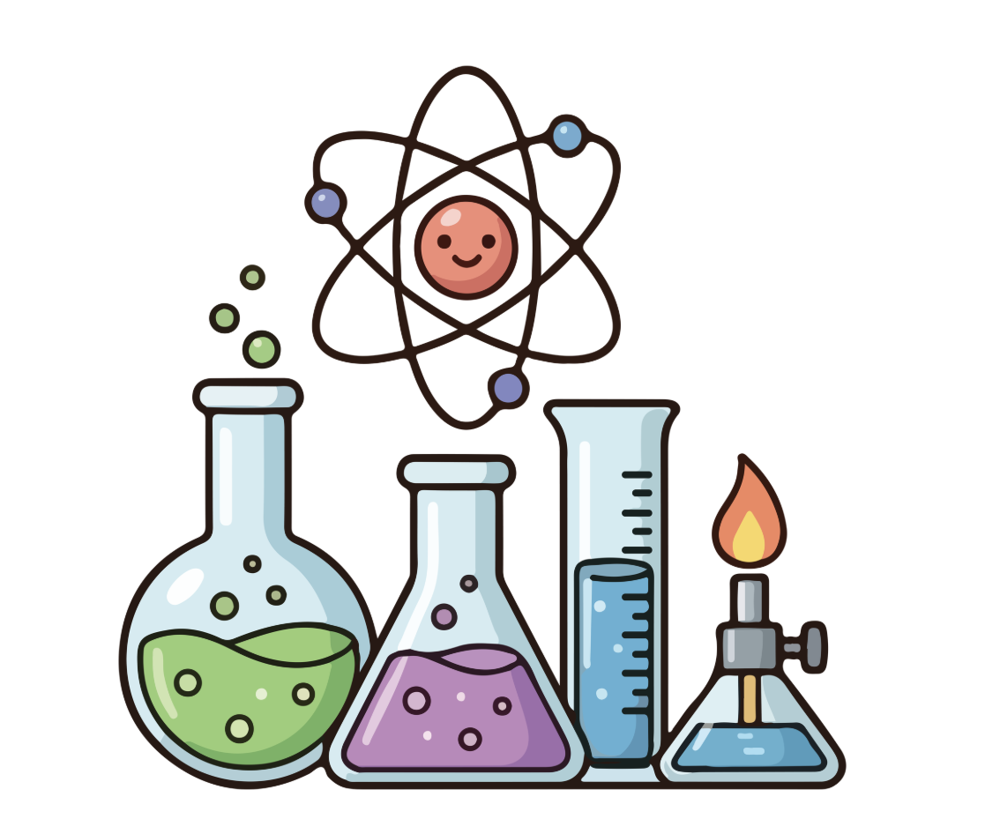

We could improve the accuracy of the experiment by measuring the growth more precisely instead of just observing. For example, measure the mass of each plant to make everything equal to every each of the plants.
Also, we could have been better if we had set the light duration to 15 to 18 hours. This is because day-neutral plants are very insensitive to day length difference for flowering and include plants such as flowering maple (Abutilon).
As a result, this will give precise and objective data which will improve the accuracy of our science experiment.